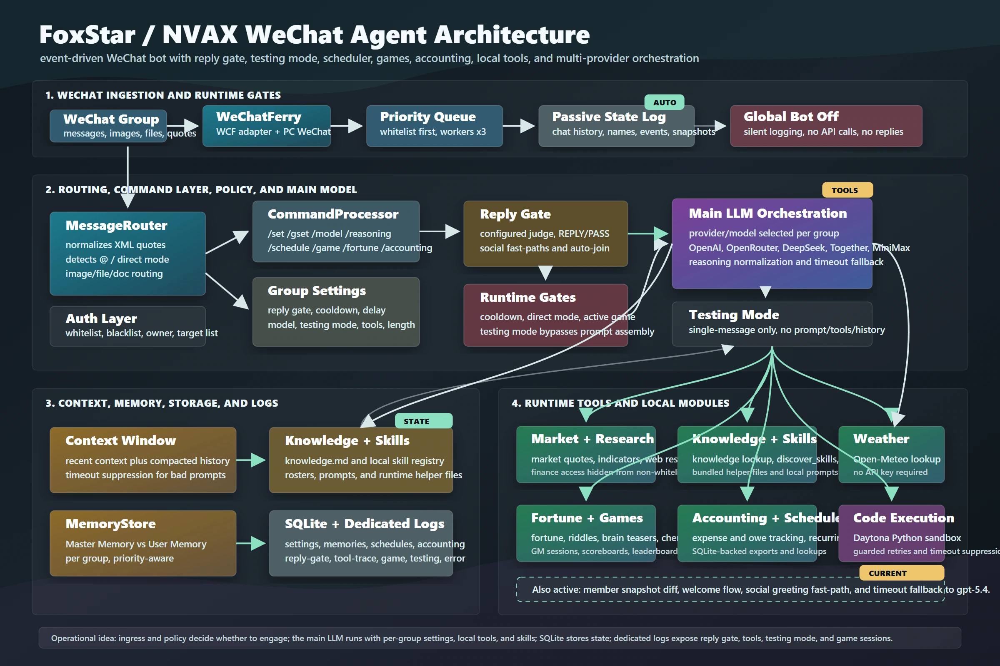

FoxStar Agent
A production agent system for WeChat communities. FoxStar routes work across language models, delegates research to a background agent, and keeps a gaming guild’s rosters and attendance records in sync with its group chats.

Two jobs in one conversation
I built FoxStar, also called NVAX, to work inside active WeChat groups. A member can ask a research question and keep talking while a separate agent investigates. That worker gets the question and its own tool context, runs searches, and writes a sourced report. FoxStar stores the result and sends a summary back to the group that requested it.


Keeping replies tied to the right message
Group messages keep arriving while a model is working. FoxStar first decides which messages warrant a reply, then saves approved work in a SQLite queue for parallel processing. Each job carries a conversation cutoff and a snapshot of the images available at that turn. If someone posts a second photo before the first answer is ready, the worker still sees the photo that prompted the question.
Choosing models, tools and context
A lightweight model handles the initial routing decision. The main model can call tools across several rounds to search the web, query a document, inspect an image or run Python in a sandbox. A shared model client supports multiple providers. For long conversations, FoxStar combines recent messages with a rolling summary. If the primary summarization provider fails, another can take over.
From a group sign-up to an attendance record
One integration serves a gaming community that organizes events in WeChat. FoxStar tracks sign-up lists as members add their names and can submit the roster to the guild’s management system. It also imports weekly attendance workbooks shared in chat. The roster and spreadsheet integrations use structured parsers so names and attendance records can move between systems without someone retyping them.
Recovery and production operations
Finishing a task and getting its result back to WeChat are separate events. FoxStar records delivery only after the messaging adapter accepts the send. If delivery fails, the report stays available for another attempt. After a restart, interrupted reply jobs return to the queue. I use per-stage timing and provider health alerts to diagnose delays, and a FastAPI operations interface to inspect jobs and manage the running system.
Open-source edition
The FoxStar Agent repository shares the authored WeChat agent framework, including message routing, model switching, tools, skills, automated workflows, scheduled tasks, remote operation through the control API, and debugging tools. It is available under Apache 2.0. Credentials, private conversations, stored memory and knowledgebase content, deployment configuration, and third-party WeChat binaries are excluded; operators supply their own configuration and transport dependencies.